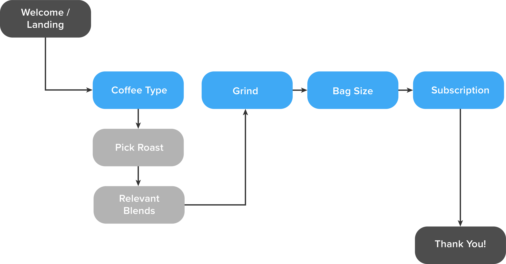

Options List:
Roasts
Blends:
- If light is chosen:
- Light Roast
- Cinnamon Blend
- Half City Roast
- If medium is chosen:
- Medium Blend (different name)
- High Blend
- City Roast
- American Roast
- If dark is chosen:
- Full City
- French Blend
- Italian Blend
- Vienna Roast
Grind:
- Whole Bean
- Ground
- fine
- medium fine
- Medium
- medium coarse
- coarse
- K-cups!
Sizes:
- 1 lb
- 2 lbs
- 5 lbs
- could include customization here? i.e. customized text on outside, customized color
References / Inspiration: